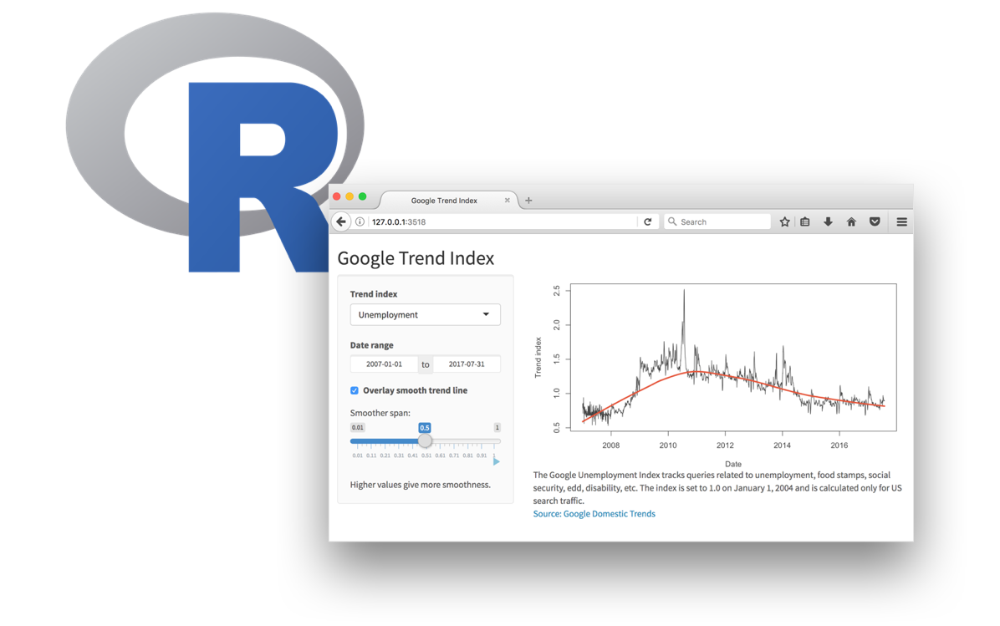
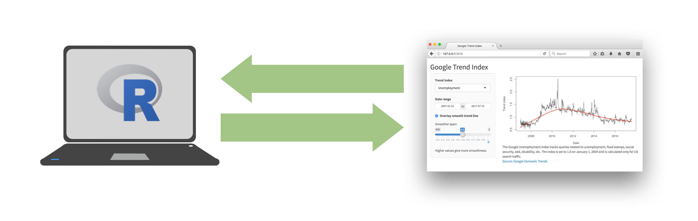
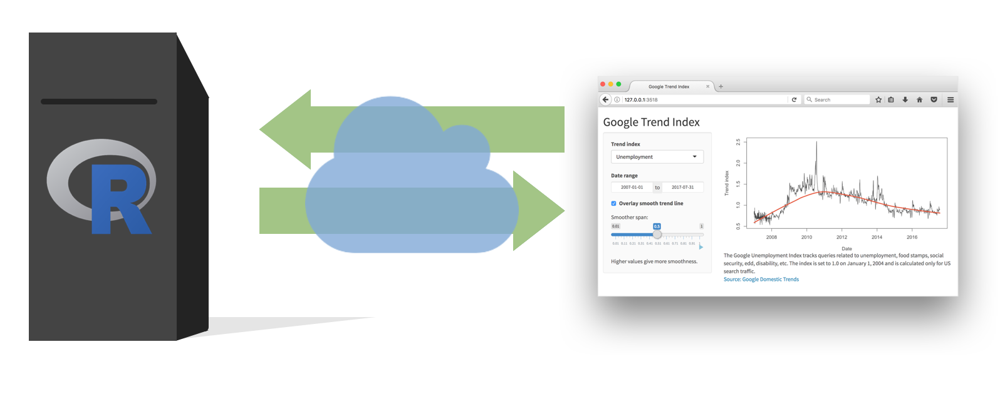
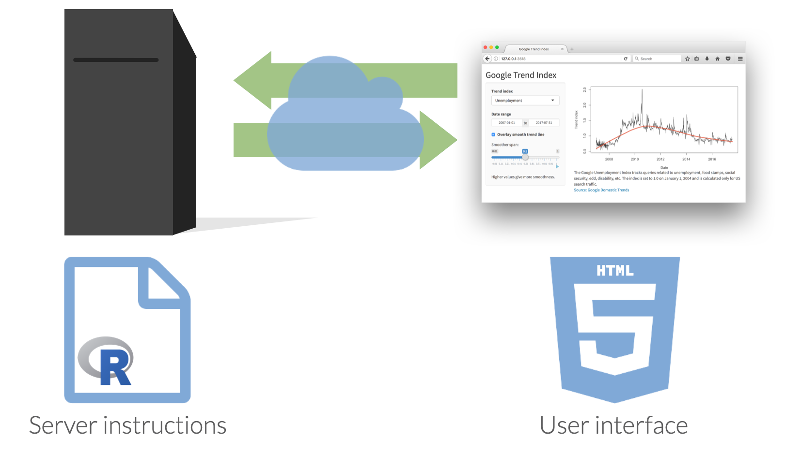

Day 23
Carleton College
Stat 220 - Spring 2025
Every Shiny app has a webpage that the user visits,
and behind this webpage there is a computer that serves this webpage by running R.

When running your app locally, the computer serving your app is your computer.

When your app is deployed, the computer serving your app is a web server.


Shiny graphs need to be “connected” to RStudio or an Rstudio server
plotly isn’t changing the underlying data set/stats being displayed, can be displayed on webpage without an RStudio session
Option 1: Embed a shiny plot/table in HTML docs
runtime: shiny to your YAML headerOption 2: Can create an app.R file with a ui() and server() function
New Files > R Markdown > Shiny - New Files > Shiny Web App
Source: Ask a Manager Survey via TidyTuesday
This data does not reflect the general population; it reflects Ask a Manager readers who self-selected to respond, which is a very different group (as you can see just from the demographic breakdown below, which is very white and very female).
Some findings here.
manager-survey.csv
# A tibble: 26,232 × 18
timestamp how_old_are_you industry job_title additional_context_o…¹
<chr> <chr> <chr> <chr> <chr>
1 4/27/2021 11:02:10 25-34 Educatio… Research… <NA>
2 4/27/2021 11:02:22 25-34 Computin… Change &… <NA>
3 4/27/2021 11:02:38 25-34 Accounti… Marketin… <NA>
4 4/27/2021 11:02:41 25-34 Nonprofi… Program … <NA>
5 4/27/2021 11:02:42 25-34 Accounti… Accounti… <NA>
6 4/27/2021 11:02:46 25-34 Educatio… Scholarl… <NA>
7 4/27/2021 11:02:51 25-34 Publishi… Publishi… <NA>
8 4/27/2021 11:03:00 25-34 Educatio… Librarian High school, FT
9 4/27/2021 11:03:01 45-54 Computin… Systems … Data developer/ETL De…
10 4/27/2021 11:03:02 35-44 Accounti… Senior A… <NA>
# ℹ 26,222 more rows
# ℹ abbreviated name: ¹additional_context_on_job_title
# ℹ 13 more variables: annual_salary <dbl>, other_monetary_comp <dbl>,
# currency <chr>, currency_other <chr>, additional_context_on_income <chr>,
# country <chr>, state <chr>, city <chr>,
# overall_years_of_professional_experience <chr>,
# years_of_experience_in_field <chr>, …10:00
Shiny apps need to be “connected” to RStudio or a remote RStudio server
You can deploy shiny apps online